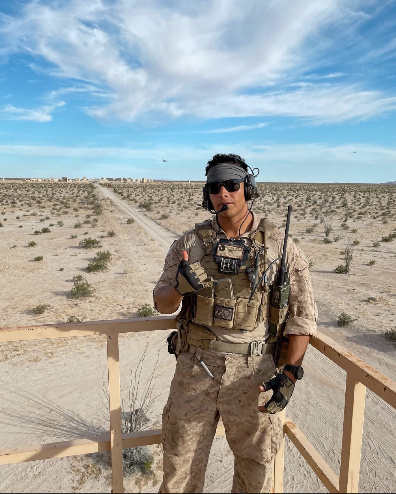
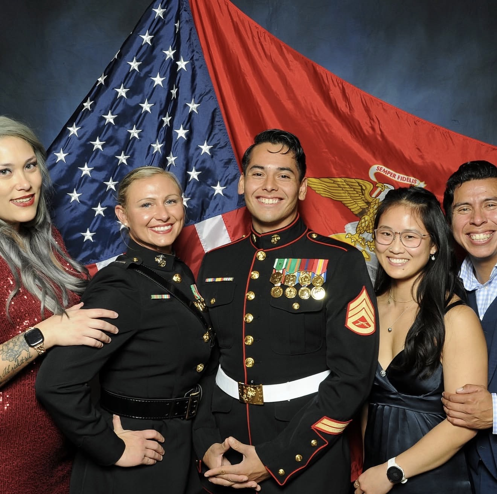

Wada EEG Analysis
Analyzing clinical EEG recorded during the Wada procedure to characterize spectral structure and hemispheric dynamics.
Research portfolio / online
Cognitive Science at Yale University
I study cognition using computational neuroscience, EEG, and machine learning.
01 / Research
Questions and methods at the intersection of brain, behavior, and computation.
Analyzing clinical EEG recorded during the Wada procedure to characterize spectral structure and hemispheric dynamics.
Using multivariate decoding and representational analyses to study task and object representations in fMRI data.
Supporting research at the intersection of clinical neuroscience, psychedelic research, and PTSD-related studies.
02 / Projects
Research questions translated into reproducible, interpretable analysis.
Current work
Clinical EEG analysis using multitaper spectral estimates, spectral parameterization, and spatial rereferencing approaches to examine hemispheric dynamics during unilateral intracarotid anesthesia.
MATLAB / FieldTrip / Spectral analysis
Completed analysis
An analysis of ICPSR 38304 examining associations among moral injury, purpose, social connection, loneliness, psychological wellness, and a suicide-risk flag. The data are observational, so the findings are associative rather than causal.
R / Model selection / Regression
03 / Writing
Selected academic work connecting cognitive science, data, and questions of reintegration.
Introduction to Cognitive Science / November 2025
An academic essay examining veteran reintegration through cognitive architecture, perception, modularity, social reasoning, and language.
Read the essay (PDF opens in a new tab)04 / About
I am an undergraduate at Yale University studying Cognitive Science. My interests lie at the intersection of neuroscience, psychology, computer science, and machine learning, with a focus on using computational methods to study cognition and behavior.
My current research spans clinical EEG analysis, multivariate neuroimaging, psychedelic research, and veteran mental health. I am particularly interested in how beliefs are formed and updated in high-stakes or uncertain environments.
05 / Journey
Experience that continues to inform how I learn, collaborate, and approach research.

Before Yale, I served for nine years as a Marine Corps Joint Terminal Attack Controller. That experience shaped how I approach complex systems, uncertainty, teamwork, and high-stakes decision-making.

06 / Outside the lab
Time outdoors, physical practice, and the communities around New Haven keep the work in perspective.
07 / Contact
I welcome conversations with faculty, research mentors, collaborators, and fellow students.